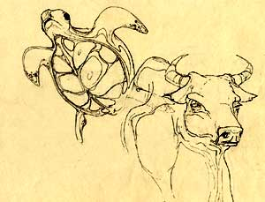

|

The farmer told him that when they found bones with writing, they would scrape the symbols off. They were afraid that no one would believe these were dragon bones if someone had written on them. Luo Zhenyu could see that these 'bones' were actually oxen shoulder blades or turtle plastrons. Most of them had writing and a number of hollows bored into them. |